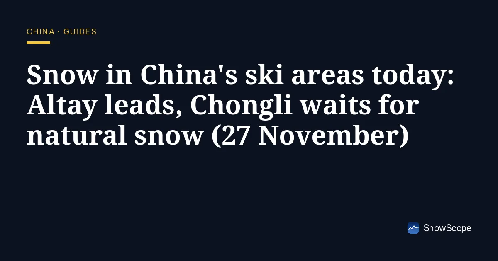
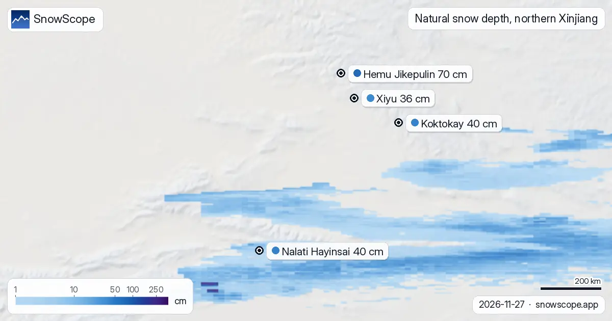
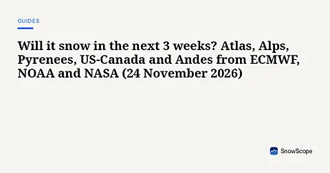

Snow in China's ski areas today: Altay leads, Chongli waits for natural snow (27 November)
The ski season in China has started in two very different ways. In the Altay and Tianshan mountains of northern Xinjiang, natural snow already covers the upper slopes: Hemu has about 70 cm and Koktokay about 40 cm on 27 November 2026. Around Beijing and Chongli, where most Chinese skiers go, the natural snow is still thin, and the runs that are open are built on machine-made snow. SnowScope now maps the snow of northern China every day, and this is the first picture.
See the live snow forecast for China in the SnowScope appSnow depth, powder alerts and the 3D map, free.
The big picture: 45 ski areas with natural snow
Our China map follows 130 ski areas in two parts of the country: the north-east, from Beijing and Zhangjiakou to Jilin and Heilongjiang, and the north of Xinjiang, from the Altay to the Tianshan. Today 45 of them have some natural snow on their upper slopes, 16 have at least 10 cm and only 4 have 30 cm or more.
Those four are all in Xinjiang. That is no surprise at this time of year: the Altay sits far inland at the edge of Siberian air, its winters start early, and the snow that falls there in late autumn usually stays, because the air is so cold and dry. The north-east gets most of its snow later, with the big outbreaks of cold air of December and January.

Xinjiang: Hemu, Koktokay and the Tianshan
In northern Xinjiang 12 of the 14 ski areas on the map have natural snow, and 9 of them have at least 10 cm. Hemu, the big new ski area of the Altay at the edge of the Kanas valley, leads with about 70 cm on its upper slopes, 6 cm of it new in the last three days. Its lifts reach 2,765 m.
Koktokay, the high ski area of Fuyun county with a top at 3,077 m, has about 40 cm. In the Tianshan, Nalati Hayinsai in the Ili valley also has about 40 cm, and Xiyu about 36 cm. Jiangjunshan, the ski area right above Altay city, is lower, with a top at 1,319 m, and has about 23 cm, 3 cm of it fresh.
If you want to ski on natural snow in China this weekend, these are the places. The snow is still early-season snow: the base is good on the groomed runs, but off them rocks and grass can be close to the surface.
Beijing and Chongli: machine snow first
Around Beijing and Zhangjiakou, the area of the 2022 Winter Olympics, our map follows 38 ski areas. Only 11 of them show any natural snow today, and none has 10 cm. Wanlong and the Snow Ruyi jumping centre have about 7 cm on the upper slopes, Genting and Thaiwoo about 6 cm. No new snow fell here in the last three days.
This does not mean the season has not started. The big Chongli areas make snow from November whenever the nights are cold enough, and they open their main runs on that machine snow long before the natural snow is deep. So the numbers on our map are the natural snow on the mountain, not the state of the groomed pistes: check the ski area's own report for open runs and lifts.
Jilin, Heilongjiang and Inner Mongolia
In the north-east beyond Beijing, 17 of 61 ski areas have natural snow and 7 have at least 10 cm. The deepest is the Changbai Mountain Natural Ski Park in Jilin, with about 25 cm after 5 cm of new snow in three days. Riyuexia has about 11 cm, 9 cm of it fresh, and Yabuli and Longzhu Erlongshan about 10 cm each.
Further west in Inner Mongolia, the Arxan area has about 9 cm, 6 cm of it new. The big Jilin resorts near Jilin city, Beidahu and Songhua Lake, still have little natural snow; like Chongli, they rely on snowmaking at the start of the season.
How to read these numbers
SnowScope gives the natural snow on the upper slopes of each ski area, estimated every day for the whole region. The map and the resort pages show the same numbers, with a forecast for the next days and alerts when new snow is coming. Our next post looks at the week ahead, ski area by ski area.
Tips for skiers
- For natural snow this weekend, go to the Altay or the Tianshan: Hemu, Koktokay, Nalati or Jiangjunshan.
- Around Chongli and Beijing, ski the groomed machine-snow runs and check which runs are open before you go.
- Early-season snow is thin off the pistes: stay on the marked runs.
- The Altay is very cold in late November: dress in layers and protect your face and hands.
More maps (external sites)
References and credits
- SnowScope live snow map of China snowscope.app/
About these numbers
Snow today: the natural snow on the upper slopes of each ski area, from the SnowScope snow map of 27 November 2026 (the same numbers as on the map). Coming snow: an ensemble of weather forecasts for each ski area's top lift, given as the lowest, middle and highest forecast.
Cite this report
For research, teaching or the press: the numbers and charts are free to reuse under CC BY 4.0 with this citation.
SnowScope (2026), Snow in China's ski areas today: Altay leads, Chongli waits for natural snow (27 November), https://snowscope.app/blog/en/2026/11/snow-in-china-ski-areas-today-27-november-2026.html, accessed 2026-11-27
SnowScope (Atlas Labs). (2026, November 27). Snow in China's ski areas today: Altay leads, Chongli waits for natural snow (27 November). SnowScope snow reports. https://snowscope.app/blog/en/2026/11/snow-in-china-ski-areas-today-27-november-2026.html
BibTeX
@misc{snowscope2026snowinchinaskiareastoday,
author = {{SnowScope (Atlas Labs)}},
title = {Snow in China's ski areas today: Altay leads, Chongli waits for natural snow (27 November)},
year = {2026},
month = nov,
howpublished = {\url{https://snowscope.app/blog/en/2026/11/snow-in-china-ski-areas-today-27-november-2026.html}},
note = {Published 2026-11-27 16:19 UTC; accessed 2026-11-27}
}· CC BY 4.0 · Methods, data and tools →
Follow China
Free: a message when fresh snow is coming, and the forecast every morning.
More snow reports

Snow on the upper slopes today: Kiroro 119 cm, Sapporo Kokusai 103 cm, Asahidake 61 cm, Niseko 31 cm, Furano 29 cm, Rusutsu 16 cm, and only light snow in the next 8 days.

A science-based snow outlook to mid-December 2026 for five mountain ranges: the 50-member ECMWF ensemble for days 1-15, NOAA GEFS for days 16-21, NASA MODIS for the snow on the ground today. Chance of more snow than the 1991-2020 normal: Atlas 4 %, Alps 10 %, Pyrenees 46 %, US-Canada West 88 %, Andes 12 %.

Snow outlook for the central and Patagonian Andes from 24 November to 14 December 2026, from the 50-member ECMWF ensemble, NOAA GEFS and NASA MODIS: snow line on the ground near 3,000 m, Portillo 40 % above normal, Bariloche and Chapelco almost nothing.